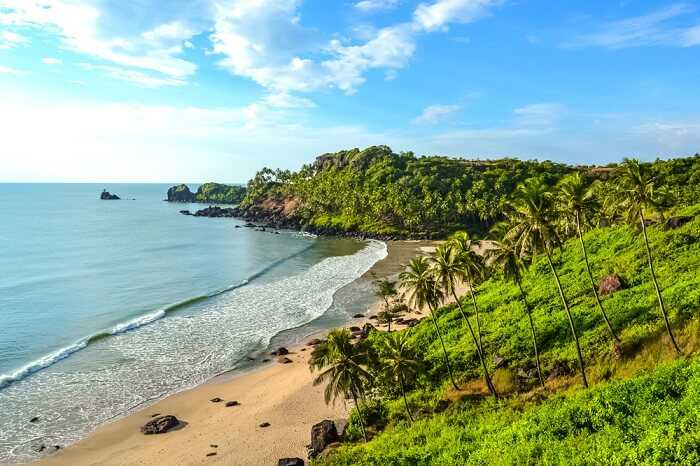
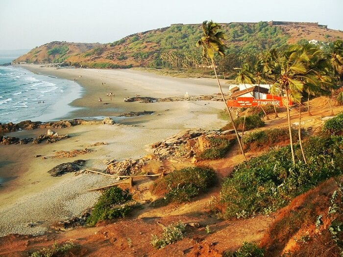

GOA
Tour Itinerary
Day 1: Arrival at Goa

- On arrival at Goa airport/railway station, our representative will pick you up.
- Transfer to the hotel and check-in.
- Spend the rest of the day at leisure or you can enjoy the swimming pool till evening.
- Dinner and overnight stay at the hotel.
Day 2: South Goa Sightseeing

- After breakfast, South Goa city tour with a private AC cab.
- You will be picked up from the hotel at 10:00 am.
- Visit Old Goa Church, St. Xavier Body, Mangeshi Temple, Dona Paula, Miramar Beach, Balaji Temple.
- Return to the hotel.
- On the way back, you can go for the Boat Cruise with Music on the Mandovi River at an additional cost (optional).
- You will be dropped at the hotel at 7:00 pm.
- Dinner at night and overnight stay at the Hotel.
Day 3: North Goa Sightseeing

- After breakfast, North Goa city tour.
- You will be picked up at 10:00 am from the hotel.
- Visit the famous Fort Aguada, Calangute Beach, Baga Beach, Anjuna Beach, Vagator Beach, etc.
- Return to the hotel.
- You will be dropped back to the hotel at around 05:00 pm.
- Dinner and overnight stay at the hotel.
Day 4: Water Sports Activities

- After breakfast, you will be picked up from Calangute/Baga/Candolim beach based on your preference at around 7.00 am.
- Drive to Malvan beach in a shared bus post.
- On arrival, there will be a speed motorboat ride for 10 -15 mins towards the diving area on the beach.
- After reaching the diving spot, enjoy activities like scuba diving, parasailing, banana ride, bumper ride & parasailing.
- You will be trained and briefed before scuba diving.
- Dive into a minimum of 10 feet and a maximum of 25 to 30 feet underwater (dependent on affecting factors like weather, the pressure of water, etc) and get your pictures taken there to have some unforgettable memories.
- Enjoy homely lunch after your scuba dive.
- In the evening, return to the hotel.
- Dinner and overnight stay at the hotel.
Day 5: Departure
After breakfast, as per your return train/flight check out from the hotel.
Our representative will pick you up and drop you at the airport/railway station for your onward journey back home.